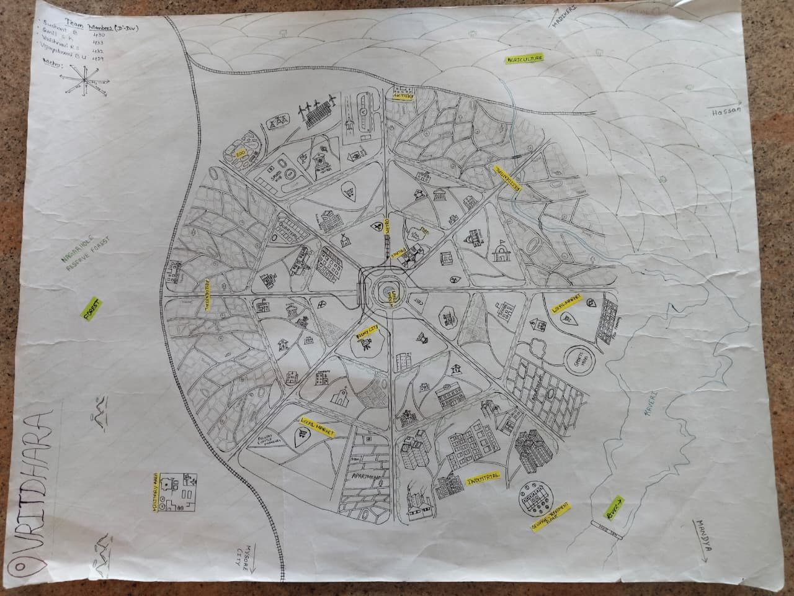

PROJECT
About Our Project
This project presents a sustainable city design inspired by eco-friendly planning, smart infrastructure, and balanced land use. Our city map includes designated zones for residential living, agriculture, industries, education, healthcare, business parks, and green forest reserves. The design focuses on clean energy, smart water management, waste recycling, and climate-resilient development. With efficient road networks, public spaces, and community facilities, the city aims to provide a healthy, inclusive, and future-ready urban environment.
Visit GitHubCity Map
